Reading Assignments and Exercises
The ALU is the core of the computer - it performs arithmetic and logic operations on data that not only realize the goals of various applications (e.g., scientific and engineering programs), but also manipulate addresses (e.g., pointer arithmetic). In this section, we will overview algorithms used for the basic arithmetic and logical operations. A key assumption is that twos complement representation will be employed, unless otherwise noted.
When adding two numbers, if the sum of the digits in a given position equals or exceeds the modulus, then a carry is propagated. For example, in Boolean addition, if two ones are added, the sum is obviously two (base 10), which exceeds the modulus of 2 for Boolean numbers (B = Z2 = {0,1}, the integers modulo 2). Thus, we record a zero for the sum and propagate a carry valued at one into the next more significant digit, as shown in Figure 3.1.
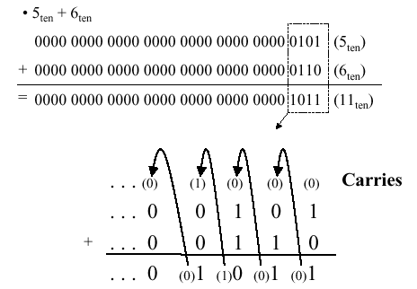
Figure 3.1. Example of Boolean addition with carry propagation,
adapted from [Maf01].
When subtracting two numbers, two alternatives present themselves. First, one can formulate a subtraction algorithm, which is distinct from addition. Second, one can negate the subtrahend (i.e., in a - b, the subtrahend is b) then perform addition. Since we already know how to perform addition as well as twos complement negation, the second alternative is more practical. Figure 3.2 illustrates both processes, using the decimal subtraction 12 - 5 = 7 as an example.
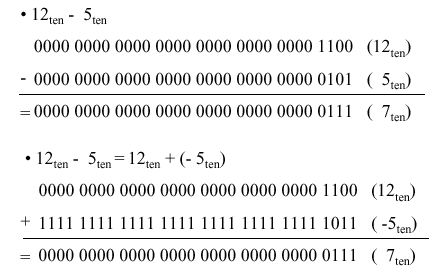
Figure 3.2. Example of Boolean subtraction using (a) unsigned
binary representation, and (b) addition with twos complement negation -
adapted from [Maf01].
Just as we have a carry in addition, the subtraction of Boolean numbers uses a borrow. For example, in Figure 3.2a, in the first (least significant) digit position, the difference 0 - 1 in the one's place is realized by borrowing a one from the two's place (next more significant digit). The borrow is propagated upward (toward the most significant digit) until it is zeroed (i.e., until we encounter a difference of 1 - 0).
Overflow occurs when there are insufficient bits in a binary number representation to portray the result of an arithmetic operation. Overflow occurs because computer arithmetic is not closed with respect to addition, subtraction, multiplication, or division. Overflow cannot occur in addition (subtraction), if the operands have different (resp. identical) signs.
To detect and compensate for overflow, one needs n+1 bits if an n-bit number representation is employed. For example, in 32-bit arithmetic, 33 bits are required to detect or compensate for overflow. This can be implemented in addition (subtraction) by letting a carry (borrow) occur into (from) the sign bit. To make a pictorial example of convenient size, Figure 3.3 illustrates the four possible sign combinations of differencing 7 and 6 using a number representation that is four bits long (i.e., can represent integers in the interval [-8,7]).
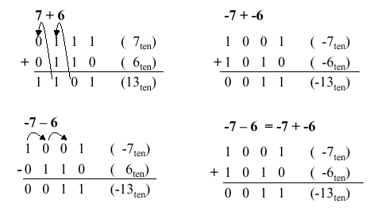
Figure 3.3. Example of overflow in Boolean arithmetic,
adapted from [Maf01].
MIPS raises an exception when overflow occurs.
Exceptions (or interrupts) act like procedure calls. The register
$epc stores the address of the instruction that
caused the interrupt, and the instruction
mfc register, $epc
moves the contents of $epc to
register. For example, register could be
$t1. This is an efficient approach, since no conditional
branch is needed to test for overflow.
Two's complement arithmetic operations
(add, addi, and sub
instructions) raise exceptions on overflow. In contrast,
unsigned arithmetic (addu and addiu)
instructions do not raise an exception on overflow, since they
are used for arithmetic operations on addresses (recall our
discussion of pointer arithmetic in Section 2.6). In terms
of high-level languages, C ignores overflows (always uses
addu, addiu, and subu),
while FORTRAN uses the appropriate instruction to detect overflow.
Figure 3.4 illustrates the use of conditional branch on overflow
for signed and unsigned addition operations.
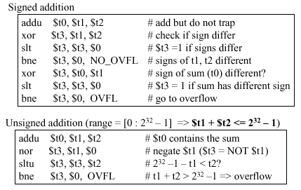
Figure 3.4. Example of overflow in Boolean arithmetic,
adapted from [Maf01].
sll and srl), as well as bitwise
and, or (and, andi,
or, ori). As we saw in Section 2, bitwise
operations treat an operand as a vector of bits and operate on each
bit position.
C bit fields are used, for example, in programming
communications hardware, where manipulation of a bit stream is
required. In Figure 3.5 is presented C code for an example
communications routine, where a structure called receiver
is formed from an 8-bit field called receivedByte and two
one-bit fields called ready and enable. The C routine
sets receiver.ready to 0 and receiver.enable
to 1.
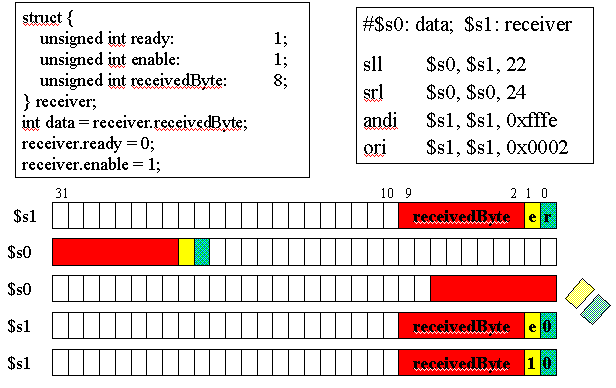
Figure 3.5. Example of C bit field use in MIPS,
adapted from [Maf01].
Note how the MIPS code implements the functionality
of the C code, where the state of the registers $s0 and $s1 is
illustrated in the five lines of diagrammed register contents below
the code. In particular, the initial register state is shown in the
first two lines. The sll instruction loads the contents
of $s1 (the receiver) into $s0 (the data
register), and the result of this is shown on the second line of the
register contents. Next, the srl instruction left-shifts
$s0 24 bits, thereby discarding the enable and
ready field information, leaving just the received byte. To
signal the receiver that the data transfer is completed, the
andi and ori instructions are used to set
the enable and ready bits in $s1, which corresponds to
the receiver. The data in $s0 has already been
received and put in a register, so there is no need for its further
manipulation.
Reading Assignments and Exercises
In this section, we discuss hardware building blocks, ALU design and implementation, as well as the design of a 1-bit ALU and a 32-bit ALU. We then overview the implementation of the MIPS ALU.
ALUs are implemented using lower-level components such as logic gates, including and, or, not gates and multiplexers. These building blocks work with individual bits, but the actual ALU works with 32-bit registers to perform a variety of tasks such as arithmetic and shift operations.
In principle, an ALU is built from 32 separate 1-bit ALUs. Typically, one constructs separate hardware blocks for each task (e.g., arithmetic and logical operations), where each operation is applied to the 32-bit registers in parallel, and the selection of an operation is controlled by a multiplexer. The advantage of this approach is that it is easy to add new operations to the instruction set, simply by associating an operation with a multiplexer control code. This can be done provided that the mux has sufficient capacity. Otherwise, new data lines must be added to the mux(es), and the CPU must be modified to accomodate these changes.
As a result, the ALU consists of 32 muxes (one for each output bit) arranged in parallel to send output bits from each operation to the ALU output.
3.2.2.1. And/Or Operations. As shown in Figure 3.6, a simple (1-bit) ALU operates in parallel, producing all possible results that are then selected by the multiplexer (represented by an oval shape at the output of the and / or gates. The output C is thus selected by the multiplexer. (Note: If the multiplexer were to be applied at the input(s) rather than the output, twice the amount of hardware would be required, because there are two inputs versus one output.)
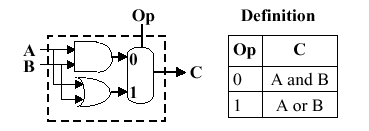
Figure 3.6. Example of a simple 1-bit ALU, where the
oval represents a multiplexer with a control code denoted
by Op and an output denoted by C -
adapted from [Maf01].
3.2.2.2. Full Adder. Now let us consider the one-bit adder. Recalling the carry situation shown in Figure 3.1, we show in Figure 3.7 that there are two types of carries - carry in (occurs at the input) and carry out (at the output).
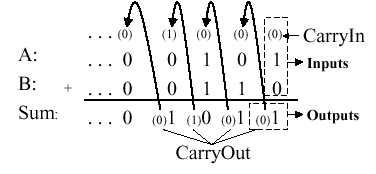
Figure 3.7. Carry-in and carry-out in Boolean addition,
adapted from [Maf01].
Here, each bit of addition has three input bits (Ai, Bi, and CarryIni), as well as two output bits (Sumi, CarryOuti), where CarryIni+1 = CarryOuti. (Note: The "i" subscript denotes the i-th bit.) This relationship can be seen when considering the full adder's truth table, shown below:
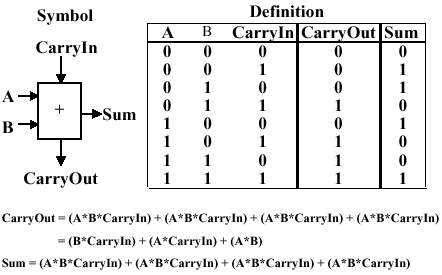
Given the four one-valued results in the truth table, we can use the sum-of-products method to construct a one-bit adder circuit from four three-input and gates and one four-input or gate, as shown in Figure 3.8a. The CarryOut calculation can be similarly implemented with three two-input and gates and one three-input or gate, as shown in Figure 3.8b. These two circuits can be combined to effect a one-bit full adder with carry, as shown in Figure 3.8c.
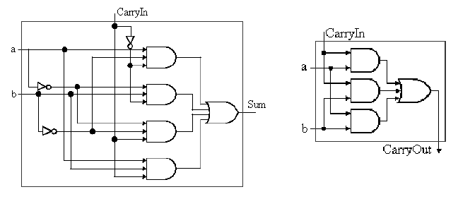
(a)
(b)
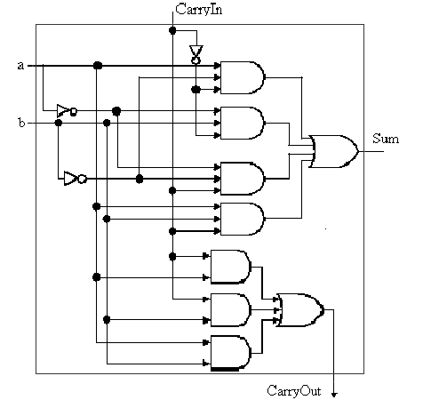
(c)
Figure 3.7. Full adder circuit (a) sum-of-products form
from above-listed truth table, (b) CarryOut production, and
(c) one-bit full adder with carry -
adapted from [Maf01].
Recalling the symbol for the one-bit adder, we can add an addition operation to the one-bit ALU shown in Figure 3.6. This is done by putting two control lines on the output mux, and by having an additional control line that inverts the b input (shown as "Binvert") in Figure 3.9).
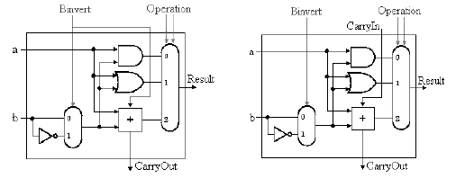
(a)
(b)
Figure
3.9. One-bit ALU with three operations: and, or, and
addition: (a) Least significant bit, (b) Remaining bits - adapted from
[Maf01].
The final implementation of the preceding technique is in a 32-bit ALU that incorporates the and, or, and addition operations. The 32-bit ALU can be simply constructed from the one-bit ALU by chaining the carry bits, such that CarryIni+1 = CarryOuti, as shown in Figure 3.10.
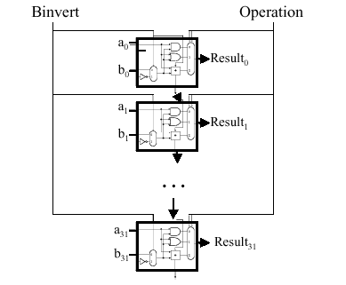
Figure
3.10. 32-bit ALU with three operations: and, or, and
addition - adapted from
[Maf01].
This yields a composite ALU with two 32-bit input vectors a and b, whose i-th bit is denoted by ai and bi, where i = 0..31. The result is also a 32-bit vector, and there are two control buses - one for Binvert, and one for selecting the operation (using the mux shown in Figure 3.9). There is one CarryOut bit (at the bottom of Figure 3.10), and no CarryIn.
We next examine the MIPS ALU and how it supports operations such as shifting and branching.
We begin by assuming that we have the generic one-bit ALU designed in Sections 3.2.1-3.2.3, and shown below:
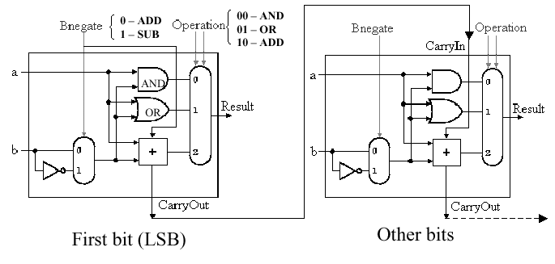
Here, the Bnegate input is the same as the Binvert input in Figure 3.9, and we assume that we have three control inputs to the mux whose control line configuration is associated with an operation, as follows:
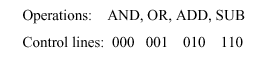
3.2.4.1. Support for the slt
Instruction. The slt instruction (set on less-than)
has the following format:
slt rd, rs, rt
where rd = 1 if rs < rt, and rd = 0 otherwise.
Observe that the inputs rs and rt can represent high-level language input variables A and B. Thus, we have the following implication:
A < B => A - B < 0 ,
which is implemented as follows:
Step 1. Perform subtraction using negation and a full adder
Step 2. Check most significant bit (sign bit)
Step 3. Sign bit tells us whether or not A < B
To implement slt, we need (a) new input
line called Less that goes directly to the mux, and (b) a new
control code (111) to select the slt operation.
Unfortunately, the result for slt cannot be taken
directly as the output from the adder. Instead, we need a new output
line called Set that is used only for the slt
instruction. Overflow detection logic is also associated with this
bit. The additional logic that supports slt is shown in
Figure 3.11.
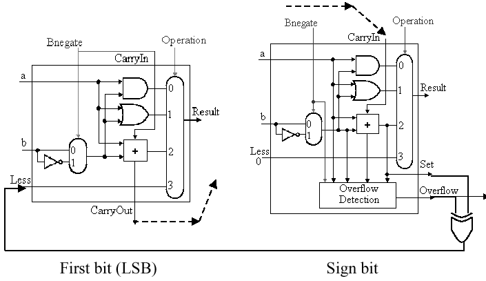
Figure
3.11. One-bit ALU with additional logic for slt operation -
adapted from [Maf01].
Thus, for a 32-bit ALU, the additional cost of the
slt instruction is (a) augmentation of each of 32 muxes
to have three control lines instead of two, (b) augmentation of each
of 32 one-bit ALU's control signal structure to have an additional
(Less) input, and (c) the addition of overflow detection
circuitry, a Set output, and an xor gate on the output
of the sign bit.
3.2.4.2. Support for the bne
Instruction. Recall the branch-on-not-equal instruction bne
r1, r2, Label, where r1 and r2 denote registers and Label is a
branch target label or address. To implement bne, we
observe that the following implication holds:
A - B = 0 => A = B .
then add hardware to test if the comparison between A and B implemented as (A - B) is zero. Again, this can be done using negation and the full adder that we have already designed as part of the ALU. The additional step is to or all 32 results from each of the one-bit ALUs, then invert the output of the or operation. Thus, if all 32 bits from the one-bit full adders are zero, then the output of the or gate will be zero (inverted, it will be one). Otherwise, the output of the or gate wil be one (inverted, it will be zero). We also need to consider A - B, to see if there is overflow when A = 0. A block diagram of the hardware modification is shown in Figure 3.12.
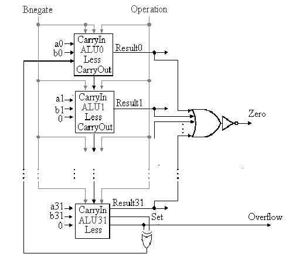
Figure
3.12. 32-bit ALU with additional logic to support bne and
slt instructions - adapted from [Maf01].
Here, the additional hardware involves 32 separate output lines from the 342 one-bit adders, as well as a cascade of or gates to implement a 32-input nor gate (which doesn't exist in practice, due to excessive fan-in requirement).
3.2.4.3. Support for Shift Instructions.
Considering the sll, srl, and sra
instructions, these are supported in the ALU under design by adding a
data line for the shifter (both left and right). However, the shifters
are much more easily implemented at the transistor level (e.g., outside
the ALU) rather than trying to fit more circuitry onto the ALU itself.
In order to implement a shifter external to the ALU, we consider the design of a barrel shifter, shown schematically in Figure 3.13. Here, the closed siwtch pattern, denoted by black filled circles, is controlled by the CPU through control lines to a mux or decoder. This allows data line xi to be sent to output xj, where i and j can be unequal.
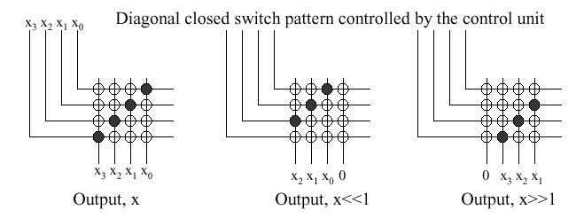
Figure
3.13. Four bit barrel shifter, where "x >> 1" denotes a shift
amount greater than one - adapted from [Maf01].
This type of N-bit shifter is well understood and easy to construct, but has space complexity of O(N2).
3.2.4.4. Support for Immediate Instructions. In the MIPS immediate instruction formats, the first input to the ALU is the first register (we'll call it rs) in the immediate command, while the second input is either data from a register rt or a zero or sign-extended constant (immediate). To support this type of instruction, we need to add a mux at the second input of the ALU, as shown in Figure 3.14. This allows us to select whether rt or the sign-extended immediate is input to the ALU.
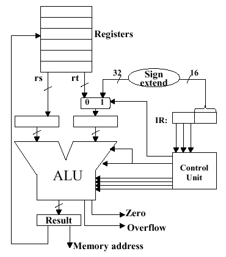
Figure
3.14. Supporting immediate instructions on a MIPS ALU design, where
IR denotes the instruction register, and (/16) denotes a
16-bit parallel bus - adapted from [Maf01].
When estimating or measuring ALU performance, one wonders if a 32-bit ALU is as fast as a 1-bit ALU - what is the degree of parallelism, and do all operations execute in parallel? In practice, some operations on N-bit operands (e.g., addition with sequential propagation of carries) take O(N) time. Other operations, such as bitwise logical operations, take O(1) time. Since addition can be implemented in a variety of ways, each with a certain level of parallelism, it is wise to consider the possibility of a full adder being a computational bottleneck in a simple ALU.
We previously discussed the ripple-carry adder (Figure 3.10) that propagates the carry bit from stage i to stage i+1. It is readily seen that, for an N-bit input, O(N) time is required to propagate the carry to the most significant bit. In contrast, the fastest N-bit adder uses O(log2N) stages in a tree-structured configuration with N-1 one-bit adders. Thus, the complexity of this technique is O(log2N) work. In a sequential model of computation, this translates to O(log2N) time. If one is adding smaller numbers (e.g., up to 10-bit integers with current memory technology), then a lookup table can be used that (1) forms a memory address A by concatenating binary representations of the two operands, and (2) produces a result stored in memory that is accessed using A. This takes O(1) time, that is dependent upon memory bandwidth.
An intermediate approach between these extremes is to use a carry-lookahead adder (CLA). Suppose we do not know the value of the carry-in bit (which is usually the case). We can express the generation (g) of a carry bit for the i-th position of two operands a and b, as follows:
gi = ai bi ,
where the i-th bits of a and b are and-ed. Similarly, the propagated carry is expressed as:
pi = ai + bi ,
where the i-th bits of a and b are or-ed. This allows us to recursively express the carry bits in terms of the carry-in c0, as follows:
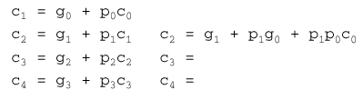
Did we get rid of the ripple? (Well, sort of...) What we did was transform the work involved in carry propagation from the adder circuitry to a large equation for cN. However, this equation must still be computed in hardware. (Lesson: In computing, you don't get much for free.)
Unfortunately, it is prohibitively costly to build a CLA circuit for operands as large as 16 bits. Instead, we can use the CLA principle to create a two-tiered circuit, for example, at the bottom level an array of four 4-bit full adders (economical to construct), connected at the top level by a CLA, as shown below:
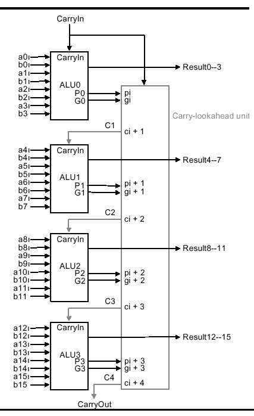
Using a two-level CLA architecture, where lower- (upper-)case g and p denote the first (second) level generates and carries, we have the following equations:
P0 = p3 + p2 + p1 + p0
P1 = p7 + p6 + p5 + p4
P2 = p11 + p10 + p9 + p8
P3 = p15 + p14 + p13 + p12
G0 = g3 + p3g2 + p3p2g1 + p3p2p1g0
G1 = g7 + p7g6 + p7p6g5 + p7p6p5g4
G2 = g11 + p11g10 + p11p10g9 + p11p10p9g8
G3 = g15 + p15g14 + p15p14g13 + p15p14p13g12
Assuming that and as well as or gates have the same propagation delay, comparative analysis of the ripple carry vs. carry lookahead adders reveals that the total time to compute a CLA result is the summation of all gate delays along the longest path through the CLA. In the case of the 16-bit adder exemplified above, the CarryOut signals c16 and C4 define the longest path. For the ripple carry adder, this path has length 2(16) = 32.
For the two-level CLA, we get two levels of logic in terms of the architecture (P and G versus p and g). Pi is specified in one level of logic using pi. Gi is specified in one level of logic using pi and gi. Also, pi and gi each represent one level of logic computed in terms of inputs ai and bi. Thus, the CLA critical path length is 2 + 2 + 1 = 5, which means that two-level 16-bit CLA is 6.4 = 32/5 times faster than a 16-bit ripple carry adder.
It is also useful to note that the logic equation for a one-bit adder can be expressed more simply with xor logic, for example:
A + B = A xor B xor CarryIn .
In some technologies, xor is more efficient than and/or gates. Also, processors are now designed in CMOS technology, which allows fewer muxes (this also applies to the barrel shifter). However, the design principles are similar.
We have shown that it is feasible to build an ALU to support the MIPS ISA. The key idea is to use a multiplexer to select the output from a collection of functional units operating in parallel. We can replicate a 1-bit ALU that uses this principle, with appropriate connections between replicates, to produce an N-bit ALU.
Important things to remember about ALUs are: (a) all of the gates are working in parallel, (b) the speed of a gate is affected by the number of inputs (degree of fan-in), and (c) the speed of a circuit depends on the number of gates in the longest computational path through the circuit (this can vary per operation). Finally, we have shown that changes in architectural organization can improve performance, similar to better algorithms in software.